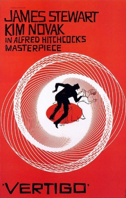
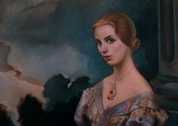
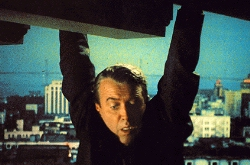
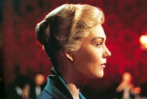
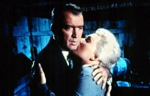
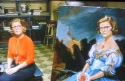

Responder a este comentário
Hitchcock e as promessas não cumpridas
por Giba Assis Brasil em 26 de dezembro de 2009Fala na mesa "As Promessas da imagem", do seminário "A Imagem necessária", Centro Cultural Santander 21/11/2001. A partir do filme "Um Corpo que cai" ("Vertigo", 1958, dir. Alfred Hitchcock); também na mesa: Jailton Moreira e Maria Ivone dos Santos.
Em primeiro lugar um rápido comentário sobre isso que o Jailton acabou de lembrar: o truque de Hitchcock ao usar filtro de névoa para tornar a personagem mais misteriosa, para dar a impressão de que ela estivesse vindo "de entre os mortos", que é o título do livro de onde saiu o filme. Ou esse outro truque do neon, do personagem com a contraluz piscando. Isso são coisas que hoje em dia a gente considera de uma banalidade absoluta. Mas é bom lembrar que elas só são banais porque alguém inventou isso quarenta e poucos anos atrás. E a verdade é que, quando Hitchcock fez isso, a utilização desse tipo de efeito como elemento de linguagem era bastante limitada.
{kind=link}
Eu acho que, quando se fala em promessas da imagem, em relação a um filme como "Um Corpo Que Cai", a primeira pergunta e ser feita, do meu ponto de vista pelo menos, não é tanto "que imagens são essas?" mas "para quem são feitas essas promessas de que se está falando?"
A primeira resposta, sem dúvida, remete ao protagonista do filme, o personagem John Ferguson, chamado de Scottie, sabe-se lá por quê. O personagem interpretado pelo James Stewart, do qual logo no início do filme ficamos sabendo que foi um brilhante jovem advogado que um dia pretendeu ser um chefe de polícia e que terminou se aposentando por causa da sua tendência à vertigem, a tal da acrofobia. Esse personagem é o fulcro central da narrativa, até porque a situação principal do filme é exatamente essa que o Jailton acabou de relatar nas palavras do próprio Hitchcock, de ser uma espécie de "Pigmalião necrófilo", o cara que está querendo "recompor" uma mulher morta, a partir das lembranças que ele tem daquela mulher. E o fantástico é que na verdade a mulher que ele está usando para fazer isso é a própria mulher morta, sem que ele saiba. Mas o mais fantástico de tudo é que nós sabemos o que o personagem não sabe.
Assim, quando Scottie pede a Judy (Kim Novak), que é a mulher morena que ele encontrou em uma rua de San Francisco, para ela passar a usar a roupa, o penteado, a cor de cabelo e a maquilagem de Madeleine (também Kim Novak), que é mulher loira pela qual ele se apaixonou, e cuja morte ele não conseguiu evitar, o que ele está fazendo é comprar uma imagem, e as promessas que virão junto com ela. É a partir dessa relação que o filme se estrutura.
Mas há uma outra resposta possível, que se esboça antes disso, quando o Scottie ainda está travando relação com essa mulher, passando a conhecê-la a partir de um convite feito pelo falso marido dela, que é o seu ex-colega Elster (Tom Helmore). Primeiro Scottie acompanha Madeleine indo ao florista, depois a um velho cemitério espanhol, onde ele encontra o túmulo da tal Carlotta Valdés, e nós ficamos sabendo que existe esse personagem. Depois ele a segue até o museu, onde há um retrato que Madeleine fica horas admirando, fixada, obcecada, e Scottie descobre que o retrato é da mesma Carlotta cujo túmulo ele tinha encontrado há pouco. Mais ainda: quando ele segue Madeleine até o hotel, descobre que ela aparece ali esporadicamente há alguns meses, e sempre se hospeda com o nome de Carlotta Valdés. Então Scottie percebe junto conosco, e nós acreditamos junto com ele, que Madeleine está obcecada por aquela figura, por aquela imagem, e está, de certa forma, introjetando pedaços daquela mulher morta chamada Carlotta. Logo em seguida ficamos sabendo, através do marido, que Carlotta é a bisavó de Madeleine, uma mulher que, vítima de intrigas, foi impedida de viver com a sua filha. Aliás, o nome Madeleine, ligado a essa idéia de passado que retorna ao presente, dá ao filme um eco proustiano que certamente não é casual.
{kind=link}
Então a relação entre Madeleine e Carlotta é de uma mulher construindo para si mesma a imagem de outra, aparentemente sem ter consciência disso. Madeleine vai reconstruindo Carlotta e ao mesmo tempo Scottie vai absorvendo essa imagem da mulher que está sendo construída na frente dele. Então já temos duas respostas possíveis à pergunta formulada no início, sobre para quem são endereçadas as promessas das imagens de "Um Corpo que cai".
Mais adiante no filme, a gente volta o fulcro da construção da imagem para Scottie, o personagem principal, quando se descobre que toda essa história foi inventada, que Madeleine não existe, ou na verdade existe mas nunca foi vista, nem por Scottie nem por nós. A Madeleine que nós vimos e que Scottie viu foi totalmente construída, simplesmente porque o assassino Elster precisava de uma testemunha absolutamente confiável e facilmente ludibriável para simular o suicídio de sua mulher, a verdadeira Madeleine. E qual testemunha mais confiável pode haver do que um ex-chefe de polícia? E qual testemunha mais ludibriável que um sujeito que, por sofrer de vertigem, não conseguiria subir até o último lance de escadas da torre da igreja de onde a mulher se jogaria?
O próprio Hitchcock comenta no livro já citado pelo Jailton que ele sempre considerou como grande problema deste roteiro o fato de que o assassino tinha que simplesmente acreditar que Scottie não subiria até o último andar da torre, caso contrário o crime seria desmascarado. E realmente, esse é o tipo de coisa que a gente começa a pensar depois de ver o filme pela segunda vez: o plano do assassino é extremamente frágil, porque tudo poderia ser posto a perder se apenas Scottie conseguisse superar o seu trauma naquele momento.
Mas na verdade os filmes do Hitchcock normalmente estão cheios desses "furos". Neste filme mesmo tem um "furo" que eu considero maior, que é o da seqüência inicial. É só lembrar: Scottie ficou pendurado ali naquela calha, numa situação de extremo perigo, de tal forma que morreria se não tivesse ajuda imediata. Ora, a única pessoa que poderia salvar Scottie, o policial fardado, interrompe a perseguição ao ladrão, volta até o telhado onde Scottie está pendurado, abaixa-se para segurá-lo, mas nesse momento escorrega e cai para a morte. E depois o filme dá um salto de tempo de um mês ou dois, e vemos Scottie conversando com sua amiga Midge (Barbara Bel Geddes), recuperando-se de um machucado na perna, do trauma da vertigem e da culpa pela morte do colega. Mas, enfim, quem tirou Scottie daquele telhado? Nós nunca vamos saber, e, para Hitchcock, isso realmente não interessa.
{kind=link}
Em outro momento do livro, Hitchcock faz questão de dizer que procura esse tipo de "furo" em seus roteiros, porque, se a narrativa for bem construída, a espécie de raciocínio que descobre o "furo" só pode ser feita por quem vê o filme pela segunda vez. E na verdade Hitchcock faz filmes para serem assistidos apenas uma vez. Ele faz filmes para serem vistos, e não pensados. E talvez seja exatamente por isso que até hoje, cinqüenta anos depois, a gente consiga rever tantas vezes os seus filmes, e pensar tanto a partir deles.
Já temos então três diferentes "endereços" para as promessas das imagens do filme. (1) Madeleine supostamente acredita ser Carlotta. (2) Scottie (com o público) acompanha Madeleine fingindo acreditar ser Carlotta, sob orientação do assassino Elster. (3) Mais tarde, Scottie convence Judy a reconstruir a imagem da Madeleine que ele acredita que pensava ser Carlotta, mas que na verdade estava atuando dirigida por Elster. É claro que, como se trata de um filme, é fácil chegar a um quarto nível: James Stewart, atuando como Scottie, convencendo Kim Novak, ou melhor, Judy, etc, etc, etc, tudo isso sob a direção de Alfred Hitchcock para deleite do público.
Mas, como o filme foi feito na fábrica de imagens e promessas que é Hollywood, ainda há espaço para mais especulação. Alguns críticos norte-americanos chegaram a ver, no triângulo Scottie - Madeleine - Judy, uma metáfora da relação entre Alfred Hitchcock, Grace Kelly e Kim Novak. E, pelo menos no nível da fofoca cinematográfica, faz sentido. Na primeira metade dos anos 50, Grace Kelly tinha se tornado a grande atriz hitchcockiana, a mais perfeita das "loiras geladas" dos filmes de Hitchcock. Mas, em 1956, digamos que ela resolveu seguir uma outra profissão, e foi forçada a abandonar a carreira cinematográfica. Hitchcock teve que procurar uma substituta, e muitos consideram que nunca mais a encontrou. Assim, a forma como Scottie vai reconstruindo Madeleine a partir de Judy seria um reflexo dos esforços do próprio Hitchcock para reconstruir Grace Kelly a partir de Kim Novak.
{kind=link}
Mais interessante do que isso, para mim, é ver este filme como uma reflexão sobre a maneira como as imagens vão sendo construídas na cabeça do espectador. Qualquer filme, na verdade, é uma construção, uma manipulação de imagens combinadas através de artifícios de linguagem, que são históricos, que vêm sendo construídos no decorrer desses cento e poucos anos em que existe o cinema, tudo isso para basicamente contar uma história. E é fácil dizer que o objetivo de todo filme narrativo é "contar uma história com início, meio e fim". Mas essa maneira de colocar as coisas tende a banalizar o filme narrativo. Quando a gente sabe, a partir da história de um século de grandes construtores de filmes narrativos (como por exemplo Hitchcock), que a construção de uma boa história através de imagens é um processo bem mais complexo do que isso. Não se trata apenas de "contar uma história com início, meio e fim", mas fazer com que o próprio espectador construa a história a partir da maneira como é administrada a informação, através das imagens e dos sons que lhe são transmitidos.
Hitchcock construiu toda uma trajetória como um verdadeiro "maestro do público". Em sua carreira, pela maneira como ele vai evoluindo de um filme para outro, é fácil perceber que o seu grande objetivo é criar como que uma "partitura cinematográfica", em que as sensações de medo, de desconforto, e eventualmente os risos de alívio do espectador são previstos e controlados a cada minuto. Mais do que qualquer outro diretor, Hitchcock conseguiu criar toda uma série de artifícios de linguagem para fazer com que o espectador tenha essa reação, digamos, pavloviana. Em "Vertigo", particularmente, há alguns pontos que eu gostaria de chamar a atenção, pela maneira diferenciada como o filme é construído.
Em primeiro lugar, a seqüência inicial, logo após os créditos, aqueles vinte e cinco planos em um minuto e meio. É a perseguição no telhado, quando percebemos que Scottie tem a tal da vertigem e o policial fardado termina morrendo ao tentar salvá-lo. Nas minhas aulas de "Fundamentos de Cinema", eu sempre começo a parte de linguagem fazendo uma comparação entre essa seqüência e a seqüência inicial de "A Marca da Maldade" de Orson Welles. São dois filmes feitos no mesmo período (ambos estrearam em maio de 1958), dentro de Hollywood, com situações semelhantes, personagens semelhantes, ações físicas iniciais semelhantes, etc. Mas, ao mesmo tempo, é difícil encontrar duas seqüências de elaboração tão diferente uma da outra. Se alguém lembra da seqüência inicial de "A Marca da Maldade", trata-se de um plano-seqüência de três minutos e meio, enquanto que no início de "Vertigo" temos, como eu já disse, 25 planos em 1 minuto e 35 segundos.
Chama atenção a fragmentação absoluta que Hitchcock usa para iniciar "Vertigo", ao contrário da desfragmentação, associada à idéia de plano-seqüência, que Orson Welles lança em "A Marca da maldade", como um manifesto do que viria a ser o cinema moderno, que vai surgir no final dos anos cinqüenta, a partir da Nouvelle Vague, e depois dos cinemas novos. Dá para dizer que essas duas seqüências iniciais, de "Vertigo" e de "A Marca da maldade", representam o confronto entre tudo o que o cinema construiu em termos de linguagem nos seus primeiros cinqüenta e poucos anos e tudo o que o cinema poderia construir de novo a partir dali. Mas esse confronto não é tão simples, como se a partir daí passasse a existir uma opção entre o cinema fragmentado e o cinema do plano-seqüência. Na verdade o que terminou acontecendo é que o cinema moderno passou a absorver essas duas possibilidades e usá-las conforme a necessidade de cada seqüência, de cada filme, da cada momento específico em que o filme é feito.
Então a seqüência inicial de "Vertigo" resume cinqüenta anos de história de cinema: como contar uma história com muita ação, com muitos planos, na maior velocidade possível e com uma economia de meios absoluta. Nas minhas aulas, eu costumo fazer pausa em cada plano, para mostrar como é fácil fazer cada um deles. E, se é tão fácil filmar cada plano, então é muito fácil filmar a seqüência inteira. É claro que para isso é preciso pensar a seqüência previamente muito bem, o que em cinema se chama "decupar".
Depois, em total contraponto a essa seqüência inicial e sua velocidade, deve ser notada a absoluta lentidão com que o filme é construído a partir desse ponto. De todos os filmes de Hitchcock, eu penso que "Vertigo" é o mais lento, é aquele em que acontecem menos coisas, ou em que as coisas levam mais tempo para acontecer. Porque, na verdade, trata-se de um filme sobre contemplação, sobre construção de imagens, e nada mais adequado a esse objetivo do que fazer o público contemplar as imagens sendo construídas. Um trecho notável do filme começa quando Scottie é convencido por Elster a seguir Madeleine no Ernie's, e ele repete o nome do restaurante, e termina no museu, quando Scottie pergunta ao guarda de quem é aquele retrato na parede: entre esses dois momentos, passam-se dez minutos e meio sem nenhuma fala. Com a exceção óbvia dos filmes feitos no período mudo, eu não lembro de outro trecho de Hitchcock que tenha tanto tempo sem fala nenhuma. (O Jailton agora me lembra da cena do roubo de "Psicose", é verdade, eu teria que cronometrar, mas é possível que chegue perto.)
E um terceiro aspecto fundamental e específico de "Vertigo" é a inversão da narrativa que acontece no início da segunda parte do filme. É claro que, no romance policial original da dupla francesa Boileau e Narcejac, chamado "D'entre les morts", ou "De entre os Mortos", já existia o fato de que a morena Judy não era apenas uma mulher parecida com a loira Madeleine, mas era a própria Madeleine. No entanto, no romance, a revelação desse fato, de que Judy e Madeleine eram a mesma pessoa, só acontecia no final, tanto para Scottie quanto para o leitor. Mas Hitchcock, de uma forma extremamente ousada, optou por modificar isso, contra os autores, contra o produtor e contra a posição original dos roteiristas Samuel Taylor e Alec Coppel. Hitchcock decidiu fazer com que essa informação fundamental fosse dada ao público imediatamente depois do primeiro encontro entre Scottie e Judy.
E ele faz isso usando dois recursos que hoje a gente consideraria absolutamente banais, assim como os filtros fog ou o neon piscando. Em primeiro lugar, ele usa um flash-back levemente modificado. Ele reconstrói a seqüência que termina a primeira parte do filme, a da morte na torre da igreja, repetindo cada plano, mas cada um deles com uma duração menor que a original, e principalmente acrescentando um plano que nós não tínhamos visto ainda, e que mostra como o crime realmente aconteceu. Na primeira parte, tínhamos visto a falsa morte de Madeleine não exatamente do ponto de vista de Scottie, mas de um ponto de vista muito próximo ao dele, acompanhando aquilo que ao personagem era permitido ver: a subida na torre até um determinado ponto, a vertigem, um grito lá em cima e, finalmente, um corpo que cai. No flash-back, voltamos a ver tudo isso, mas vemos mais um pouco: agora seguimos o ponto de vista de Judy, de suas lembranças, e podemos ver como ela chega ao topo da torre, onde Elster a espera com um cadáver, que em seguida é jogado lá em baixo. Quem grita é Judy, a falsa Madeleine, mas o corpo que cai é o da verdadeira Madeleine, já morta.
O segundo recurso, ainda mais banal que o primeiro, é a "carta reveladora". Imediatamente depois de ter "lembrado" a morte de Madeleine em flash-back, Judy resolve contar tudo a Scottie. Vemos então ela escrevendo uma carta, e ouvimos sua voz, sobreposta, explicando tudo o que acabamos de ver e ainda um fato novo: "o que não foi planejado é que eu me apaixonei por você". Isso muda tudo para Judy, e explica tudo para o público. Mas não explica nem muda nada para Scottie: em seguida, Judy se arrepende, rasga a carta já escrita, desiste. Mas o objetivo do roteirista já foi atingido: a carta chegou ao espectador, ajudando a construir o elemento de imagem que estava faltando.
Sendo "Vertigo" um filme sobre duplos, outro aspecto que merece ser destacado é a forma original como Hitchcock utiliza o dublê no filme. Grande parte dos filmes, especialmente os com orçamentos mais altos, usam dublês para poupar suas estrelas, seja em planos mais abertos ou em planos muito arriscados. Em "Vertigo", Kim Novak tinha uma dublê chamada Jean Corbett, que foi usada sempre que havia um plano mais aberto de Madeleine ou Judy dirigindo seu carro, ou quando Madeleine se joga no rio, etc. Mas Hitchcock usa os dublês de uma forma criativa. A tal Jean Corbett é também a verdadeira Madeleine, no único momento em que este personagem aparece: o plano da torre, quando ela já está morta e vai ser jogada lá embaixo por Elster. Claro: do ponto de vista do assassino, ele escolheu Judy para ser a falsa Madeleine a ser seguida por Scottie porque ela era uma mulher parecida com sua verdadeira esposa.
Depois da primeira morte de Madeleine, Scottie passa pelo sanatório, se recupera parcialmente, volta a andar pelas ruas de São Francisco e imagina ver Madeleine em todas as mulheres que ele encontra. Nesta seqüência, as mulheres que Scottie vê são alternadamente a estrela Kim Novak, a dublê Jean Corbett e ainda outras mulheres bem diferentes de Kim Novak/Madeleine. Quando Scottie volta ao restaurante Ernie's, e acha que vê a Madeleine, na verdade ele está vendo (e nós vemos) Kim Novak, filmada através de filtros, meio desfocada lá no fundo do cenário, e quando ele olha de novo é uma outra mulher completamente diferente. Mais tarde, quando Scottie encontra o carro verde que tinha sido de Madeleine, ele primeiramente vê (e nós vemos) Jean Corbett, e quando ele se aproxima já é uma mulher mais velha. Nos dois casos, a decupagem de Hitchcock utiliza um esquema absolutamente clássico de quatro planos: plano de olhar / ponto de vista / plano de olhar / ponto de vista.
{kind=link}
Para quem não está acostumado com essa nomenclatura, trata-se de um dos princípios de linguagem mais antigos do cinema, o par de planos olhar / ponto de vista. O cinema é basicamente a arte do olhar, não só do olhar do espectador que vê o filme, mas também do olhar do ator/personagem na tela. Assim, em todos os filmes, a todo momento vemos personagens olhando alguma coisa e em seguida vemos aquilo que o personagem vê. Então, ao longo do tempo, se criou essa convenção: sempre que um filme mostra o rosto de um personagem olhando, o próximo plano será aquilo que o que personagem está vendo. O segundo plano do par chama-se "ponto de vista" e o primeiro, o "plano de olhar", por determinar as condições de visão do segundo, às vezes também é chamado de "determinante".
Então, nas duas cenas citadas, a decupagem de Hitchcock utiliza quatro planos, dois pares: olhar / ponto de vista / olhar / ponto de vista. No primeiro plano de olhar, vemos Scottie curioso, inquieto, procurando a mulher morta que ele está querendo reencontrar para depois reconstruir. Então, um ponto de vista falso, mostrando não o que Scottie vê, mas o que ele imagina ou quer ver: Madeleine, representada por Kim Novak ou Jean Corbett. Aí um terceiro plano, que é de novo um plano de olhar, mas agora mostrando Scottie absolutamente alterado pela expectativa de ter encontrado Madeleine. E, por último, o quarto plano, um novo ponto de vista, agora o ponto de vista real, a mulher com alguma semelhança, ou muito pouca semelhança com a Madeleine que Scottie estava procurando. Mais uma vez, um recurso banal usado com criatividade.
Duplicidades e substituições aparecem o tempo inteiro em "Vertigo", da primeira à última cena. A primeira imagem do filme é um rosto desconhecido, de uma moça chamada Joanne Genthon. Menos que um rosto, são fragmentos de um rosto. A câmara mostra um olho, depois a boca, depois o nariz, e por fim entra no outro olho, quando vemos aquele grafismo espiral de Saul Bass (o artista responsável pelos créditos), que antecipa a idéia de vertigem e que terminou virando a marca registrada do filme, inclusive no cartaz. Mas é este mesmo rosto que vai aparecer mais tarde como sendo o de Carlotta Valdés, a mulher que vem "de entre os mortos", conforme o título do livro. A princípio, é apenas um rosto pintado no quadro com que a falsa Madeleine tanto parece se identificar. Mas depois Carlotta aparece filmada, na alucinação de Scottie, como se ele sentisse que, com a morte de Madeleine, ele próprio passasse a ser perseguido pelo fantasma de Carlotta.
A duplicidade de Carlotta se estende até o personagem de Midge, a amiga de Scottie, sua ex-namorada, extremamente maternal e certamente apaixonada por ele. Midge é sem dúvida a substituta da mãe que o protagonista não tem e não teve, ao menos dentro dos limites do filme. Quando Midge refaz o retrato de Carlotta, colocando a si própria no lugar da bisavó de Madeleine, ela está claramente pedindo para ser vista por Scottie como mulher, e dizendo a ele quem é que realmente o ama. O fato de que Scottie não aceita levar a brincadeira adiante é justamente mais um indicativo de que a relação entre os dois é na verdade uma relação de mãe e filho.
{kind=link}
Por fim, na última cena do filme, Scottie está de volta à torre da igreja, agora com Judy, e agora compreendendo o que aconteceu da primeira vez, e graças a isso conseguindo superar seu trauma e vencer a vertigem. O crime está esclarecido, Scottie e Judy declaram amor um pelo outro, tudo se encaminha para um final feliz. E então o que acontece? O absolutamente imprevisível, o acaso. Surge das sombras uma figura, que a princípio parece ser um fantasma, e diz "I heard voices" ("Eu ouvi vozes"). Judy, próxima demais do parapeito da torre, com a consciência culpada por ter sido cúmplice do assassinato da verdadeira Madeleine, se apavora, perde o equilíbrio e cai. Em seguida, a figura aparece por inteiro e vemos que é apenas uma freira, que agora diz "God have mercy" ("Deus tenha piedade"). Mas, quando Hitchcock filma, uma freira nunca é "apenas uma freira": as duas frases são ditas pela voz da própria Kim Novak, o que dá mais um dado de duplicidade para esse filme em que os duplos são o fator central.
Ora, é de um freudianismo quase primário, a ponto de eu (que não sou do ramo), conseguir perceber, o fato de que a idéia do duplo vem do desejo de permanecer para além da morte. Isso fica muito claro na seqüência da sequóia, quando Scottie ainda está tentando entender quem é Madeleine, por que aquela mulher age de forma tão absurda. Ela termina contando para ele que não gosta da sequóia, que não é justo que aquela árvore esteja "sempre viva e sempre verde" enquanto nós temos que morrer. Eu nasci, eu vivo e vou morrer, raciocina ela, e tudo isso vai ser apenas um instante para a sequóia.
Naquele momento do filme, quando nós ainda acreditamos que Madeleine está obsedada pela vida e pela morte da bisavó, isso tem um significado. Mais adiante, quando percebemos que a fixação de Madeleine por Carlotta era apenas uma armação, esse significado meio que se perde. Mas, na cena final, quando Judy cai da torre de novo, e dessa vez de verdade (levando, segundo a lenda, os distribuidores portugueses a chamarem o filme de "A Mulher que morreu duas vezes"), toda a relação de Madeleine/Judy com a morte, e com a imortalidade da sequóia, ganha um novo significado.
De qualquer maneira, este é o final de "Vertigo" que nós conhecemos. Mas, esta semana, pesquisando sobre o filme na Internet, encontrei uma versão do roteiro, que seria o último tratamento antes da filmagem, datada de 12 de setembro de 1957, onde, para minha grande surpresa, na última página há uma cena que nunca apareceu no filme, nem na versão de 1958, nem na versão restaurada com um minuto a mais que foi lançada em 1996, que é essa que vocês acabaram de assistir aqui no Centro Cultural Santander.
É a cena que entraria depois que Judy cai da torre, e que eu vou tentar ler rapidamente para vocês:
No apartamento de Midge. Midge está afundada em uma cadeira, ouvindo rádio. Atrás dela, a noite em San Francisco. A voz no rádio começa seu texto no meio de uma frase: "... provavelmente está vivo, mas agora se acredita que ele está morando em algum lugar no sul da França. O Capitão Hansen declarou que não haveria problema em extraditar Elster [aí ficamos sabendo de quem o rádio está falando] assim que ele for encontrado [ou seja: Elster ainda não foi encontrado, mas já sabem que ele é o assassino]. Outras notícias locais: em Berkeley, três calouros da Universidade da Califórnia passaram por uma situação embaraçosa esta noite, quando foram encontrados pelo chefe de polícia William Fogarty, levando uma vaca escadas acima em..." [O texto do rádio é interrompido neste ponto, e o roteiro volta à narração.] A essa altura, Midge ouviu um barulho do lado de fora, se levantou da cadeira e desligou o rádio. Ela ouve de novo por um momento e então se movimenta rapidamente até a mesa, onde há garrafas, copos e gelo. Ela começa a preparar um highball [uísque com soda, em copo grande, segundo o meu Michaelis] e não se vira quando ouve o barulho da porta da rua se abrindo. Scottie entra e fecha a porta atrás de si. Seu rosto é uma máscara. Ele se move lentamente através da sala até parar ao lado da janela, com a vista de San Francisco diante dele, e olha diretamente para a frente, pensando. Midge pega a bebida, lança um olhar até Scottie, pega a garrafa e serve mais uma dose. Então ela se desloca através da sala e oferece a bebida. Scottie a aceita. Midge se afasta de volta, pega a sua própria bebida, senta-se e volta a olhar através da sala. Scottie fica quieto, imóvel, e então pega o seu copo e toma um longo gole. Ele olha até a paisagem da cidade. "Fade out", fim.
Desnecessário? Eu acho, e acredito que Hitchcock também achou. Tanto que ele nunca nos mostrou essa imagem. Hitchcock sempre preferiu as promessas.
**********
PRINCIPAIS FONTES:
- TRUFFAUT, François. Hitchcock-Truffaut entrevistas. Editora Brasiliense, São Paulo, 1986.
- CRANE, Rachel. Rachel's Works: Hitchcock's Vertigo.
- MAGILL'S SURVEY OF CINEMA. An Extended essay on Vertigo.
- TAYLOR, Samuel & COPPEL, Alec: Vertigo [roteiro].